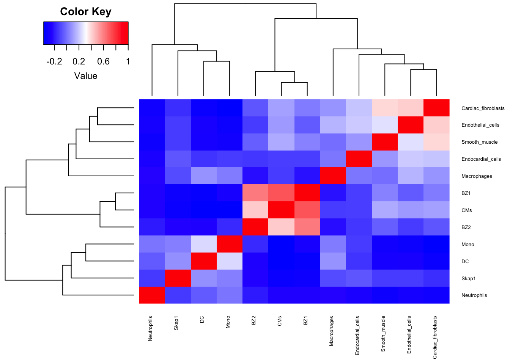
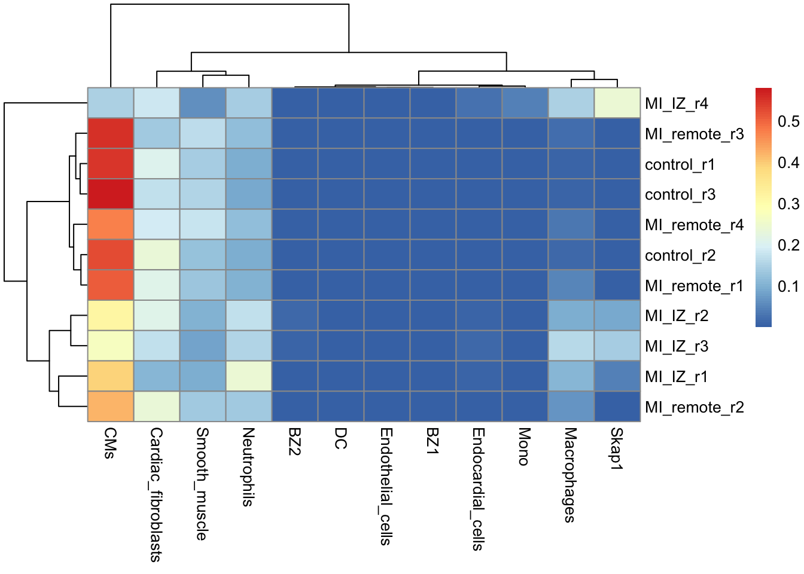

proteomics.bayesPrism_deconv
FloWuenne
2023-06-14
Last updated: 2023-06-20
Checks: 6 1
Knit directory: mi_spatialomics/
This reproducible R Markdown analysis was created with workflowr (version 1.7.0). The Checks tab describes the reproducibility checks that were applied when the results were created. The Past versions tab lists the development history.
The R Markdown file has unstaged changes. To know which version of
the R Markdown file created these results, you’ll want to first commit
it to the Git repo. If you’re still working on the analysis, you can
ignore this warning. When you’re finished, you can run
wflow_publish to commit the R Markdown file and build the
HTML.
Great job! The global environment was empty. Objects defined in the global environment can affect the analysis in your R Markdown file in unknown ways. For reproduciblity it’s best to always run the code in an empty environment.
The command set.seed(20230612) was run prior to running
the code in the R Markdown file. Setting a seed ensures that any results
that rely on randomness, e.g. subsampling or permutations, are
reproducible.
Great job! Recording the operating system, R version, and package versions is critical for reproducibility.
Nice! There were no cached chunks for this analysis, so you can be confident that you successfully produced the results during this run.
Great job! Using relative paths to the files within your workflowr project makes it easier to run your code on other machines.
Great! You are using Git for version control. Tracking code development and connecting the code version to the results is critical for reproducibility.
The results in this page were generated with repository version 05aec09. See the Past versions tab to see a history of the changes made to the R Markdown and HTML files.
Note that you need to be careful to ensure that all relevant files for
the analysis have been committed to Git prior to generating the results
(you can use wflow_publish or
wflow_git_commit). workflowr only checks the R Markdown
file, but you know if there are other scripts or data files that it
depends on. Below is the status of the Git repository when the results
were generated:
Ignored files:
Ignored: .DS_Store
Ignored: .Rhistory
Ignored: .Rproj.user/
Ignored: data/.DS_Store
Ignored: references/
Ignored: renv/library/
Ignored: renv/staging/
Untracked files:
Untracked: analysis/proteomics.bulk_de_analysis.Rmd
Untracked: analysis/proteomics.pathway_enrichment_analysis.Rmd
Untracked: analysis/proteomics.scRNAseq_comparison.Rmd
Untracked: data/140623.calcagno_et_al.seurat_object.rds
Untracked: data/proteomics.bayesprism.bp_res.rds
Untracked: omnipathr-log/
Untracked: output/mi_iz_specific_proteins.tsv
Unstaged changes:
Modified: .gitignore
Modified: analysis/data_analysis.Rmd
Modified: analysis/proteomics.bayesPrism_deconv.Rmd
Modified: renv.lock
Note that any generated files, e.g. HTML, png, CSS, etc., are not included in this status report because it is ok for generated content to have uncommitted changes.
These are the previous versions of the repository in which changes were
made to the R Markdown
(analysis/proteomics.bayesPrism_deconv.Rmd) and HTML
(docs/proteomics.bayesPrism_deconv.html) files. If you’ve
configured a remote Git repository (see ?wflow_git_remote),
click on the hyperlinks in the table below to view the files as they
were in that past version.
| File | Version | Author | Date | Message |
|---|---|---|---|---|
| html | 05aec09 | FloWuenne | 2023-06-14 | Build site. |
| Rmd | 0eba381 | FloWuenne | 2023-06-14 | Updating Data analysis links. |
| html | 0eba381 | FloWuenne | 2023-06-14 | Updating Data analysis links. |
library(data.table)
library(BayesPrism)Loading required package: snowfallLoading required package: snowLoading required package: NMFLoading required package: registryLoading required package: rngtoolsLoading required package: clusterNMF - BioConductor layer [OK] | Shared memory capabilities [NO: bigmemory] | Cores 2/2 To enable shared memory capabilities, try: install.extras('
NMF
')Warning: replacing previous import 'gplots::lowess' by 'stats::lowess' when
loading 'BayesPrism'Warning: replacing previous import 'BiocParallel::register' by 'NMF::register'
when loading 'BayesPrism'library(Seurat)The legacy packages maptools, rgdal, and rgeos, underpinning this package
will retire shortly. Please refer to R-spatial evolution reports on
https://r-spatial.org/r/2023/05/15/evolution4.html for details.
This package is now running under evolution status 0 Attaching SeuratObjectlibrary(pheatmap)
library(tidyverse)── Attaching core tidyverse packages ──────────────────────── tidyverse 2.0.0 ──
✔ dplyr 1.1.2 ✔ readr 2.1.4
✔ forcats 1.0.0 ✔ stringr 1.5.0
✔ ggplot2 3.4.2 ✔ tibble 3.2.1
✔ lubridate 1.9.2 ✔ tidyr 1.3.0
✔ purrr 1.0.1 ── Conflicts ────────────────────────────────────────── tidyverse_conflicts() ──
✖ dplyr::between() masks data.table::between()
✖ dplyr::combine() masks Biobase::combine(), BiocGenerics::combine()
✖ dplyr::filter() masks stats::filter()
✖ dplyr::first() masks data.table::first()
✖ lubridate::hour() masks data.table::hour()
✖ lubridate::isoweek() masks data.table::isoweek()
✖ dplyr::lag() masks stats::lag()
✖ dplyr::last() masks data.table::last()
✖ lubridate::mday() masks data.table::mday()
✖ lubridate::minute() masks data.table::minute()
✖ lubridate::month() masks data.table::month()
✖ ggplot2::Position() masks BiocGenerics::Position(), base::Position()
✖ lubridate::quarter() masks data.table::quarter()
✖ lubridate::second() masks data.table::second()
✖ purrr::transpose() masks data.table::transpose()
✖ lubridate::wday() masks data.table::wday()
✖ lubridate::week() masks data.table::week()
✖ lubridate::yday() masks data.table::yday()
✖ lubridate::year() masks data.table::year()
ℹ Use the conflicted package (<http://conflicted.r-lib.org/>) to force all conflicts to become errorsIntroduction
Here we will use BayesPrism to attempt to deconvolute the protomics protein matrix using snRNA-seq data from Calcagno et al. 2022.
Load and format data
## Import imputed protein table (our "bulk" data)
imp_prot <- fread(file = "./output/proteomics.filt_imputed_proteins.tsv")
proteins <- imp_prot$Genes
imp_prot_mat <- imp_prot %>%
select(-c(Protein_Ids,imputed_values,Genes))
samples <- colnames(imp_prot_mat)
imp_prot_mat <- t(imp_prot_mat)
imp_prot_mat <- as.matrix(imp_prot_mat)
imp_prot_mat <- round(2^imp_prot_mat,0)
rownames(imp_prot_mat) <- samples
colnames(imp_prot_mat) <- proteinscalcagno_et_al_seurat <- readRDS("./data/140623.calcagno_et_al.seurat_object.rds")## Filter out lowly abundant cell-types
calcagno_et_al_seurat <- subset(calcagno_et_al_seurat,final_cluster != "Sigf")
## Create BayesPrism input data
sc.dat <- as.matrix(t(calcagno_et_al_seurat@assays$RNA@counts))Warning in asMethod(object): sparse->dense coercion: allocating vector of size
6.6 GiBcell.type.labels <- as.character(calcagno_et_al_seurat@meta.data$cell_type)
cell.state.labels <- as.character(calcagno_et_al_seurat@meta.data$final_cluster)## Plot a table showing cell-type and cell state numbers
table(cbind.data.frame(cell.state.labels, cell.state.labels)) cell.state.labels
cell.state.labels Ankrd1 Arg1 Ccl21a Cxcl5 DC Dkk3 Fbln5 Gsn Hsd11b1 ISG
Ankrd1 1709 0 0 0 0 0 0 0 0 0
Arg1 0 430 0 0 0 0 0 0 0 0
Ccl21a 0 0 458 0 0 0 0 0 0 0
Cxcl5 0 0 0 1128 0 0 0 0 0 0
DC 0 0 0 0 170 0 0 0 0 0
Dkk3 0 0 0 0 0 1501 0 0 0 0
Fbln5 0 0 0 0 0 0 1165 0 0 0
Gsn 0 0 0 0 0 0 0 2407 0 0
Hsd11b1 0 0 0 0 0 0 0 0 2466 0
ISG 0 0 0 0 0 0 0 0 0 341
Kit 0 0 0 0 0 0 0 0 0 0
Lyve1 0 0 0 0 0 0 0 0 0 0
Mono 0 0 0 0 0 0 0 0 0 0
Myh11 0 0 0 0 0 0 0 0 0 0
Myh6 0 0 0 0 0 0 0 0 0 0
Myo1b 0 0 0 0 0 0 0 0 0 0
Npr3 0 0 0 0 0 0 0 0 0 0
NSG 0 0 0 0 0 0 0 0 0 0
Pecam1 0 0 0 0 0 0 0 0 0 0
Pi16 0 0 0 0 0 0 0 0 0 0
Postn 0 0 0 0 0 0 0 0 0 0
Rep 0 0 0 0 0 0 0 0 0 0
Retnlg 0 0 0 0 0 0 0 0 0 0
Skap1 0 0 0 0 0 0 0 0 0 0
Xirp2 0 0 0 0 0 0 0 0 0 0
cell.state.labels
cell.state.labels Kit Lyve1 Mono Myh11 Myh6 Myo1b Npr3 NSG Pecam1 Pi16 Postn
Ankrd1 0 0 0 0 0 0 0 0 0 0 0
Arg1 0 0 0 0 0 0 0 0 0 0 0
Ccl21a 0 0 0 0 0 0 0 0 0 0 0
Cxcl5 0 0 0 0 0 0 0 0 0 0 0
DC 0 0 0 0 0 0 0 0 0 0 0
Dkk3 0 0 0 0 0 0 0 0 0 0 0
Fbln5 0 0 0 0 0 0 0 0 0 0 0
Gsn 0 0 0 0 0 0 0 0 0 0 0
Hsd11b1 0 0 0 0 0 0 0 0 0 0 0
ISG 0 0 0 0 0 0 0 0 0 0 0
Kit 2994 0 0 0 0 0 0 0 0 0 0
Lyve1 0 3113 0 0 0 0 0 0 0 0 0
Mono 0 0 330 0 0 0 0 0 0 0 0
Myh11 0 0 0 421 0 0 0 0 0 0 0
Myh6 0 0 0 0 5210 0 0 0 0 0 0
Myo1b 0 0 0 0 0 3401 0 0 0 0 0
Npr3 0 0 0 0 0 0 876 0 0 0 0
NSG 0 0 0 0 0 0 0 221 0 0 0
Pecam1 0 0 0 0 0 0 0 0 8591 0 0
Pi16 0 0 0 0 0 0 0 0 0 901 0
Postn 0 0 0 0 0 0 0 0 0 0 1095
Rep 0 0 0 0 0 0 0 0 0 0 0
Retnlg 0 0 0 0 0 0 0 0 0 0 0
Skap1 0 0 0 0 0 0 0 0 0 0 0
Xirp2 0 0 0 0 0 0 0 0 0 0 0
cell.state.labels
cell.state.labels Rep Retnlg Skap1 Xirp2
Ankrd1 0 0 0 0
Arg1 0 0 0 0
Ccl21a 0 0 0 0
Cxcl5 0 0 0 0
DC 0 0 0 0
Dkk3 0 0 0 0
Fbln5 0 0 0 0
Gsn 0 0 0 0
Hsd11b1 0 0 0 0
ISG 0 0 0 0
Kit 0 0 0 0
Lyve1 0 0 0 0
Mono 0 0 0 0
Myh11 0 0 0 0
Myh6 0 0 0 0
Myo1b 0 0 0 0
Npr3 0 0 0 0
NSG 0 0 0 0
Pecam1 0 0 0 0
Pi16 0 0 0 0
Postn 0 0 0 0
Rep 2051 0 0 0
Retnlg 0 59 0 0
Skap1 0 0 177 0
Xirp2 0 0 0 770## Plot correlation of cell-types
plot.cor.phi (input=sc.dat,
input.labels=cell.type.labels,
title="cell type correlation",
#specify pdf.prefix if need to output to pdf
#pdf.prefix="gbm.cor.ct",
cexRow=0.5, cexCol=0.5,
)
Filter data
Next, we will filter the data before runnin BayesPrism.
Filter outlier genes
sc.stat <- plot.scRNA.outlier(
input=sc.dat,
cell.type.labels=cell.type.labels,
species="mm",
return.raw=TRUE
)Gene symbols detected. Recommend to use EMSEMBLE IDs for more unique mapping.
head(sc.stat) exp.mean.log max.spec Mrp other_Rb Rb chrM chrX chrY act
Xkr4 -10.90099 0.5322778 FALSE FALSE FALSE FALSE FALSE FALSE FALSE
Gm1992 -15.47522 0.8454570 FALSE FALSE FALSE FALSE FALSE FALSE FALSE
Gm37381 -15.93627 0.5760630 FALSE FALSE FALSE FALSE FALSE FALSE FALSE
Rp1 -12.99242 0.5751696 FALSE FALSE FALSE FALSE FALSE FALSE FALSE
Sox17 -11.36258 0.5755280 FALSE FALSE FALSE FALSE FALSE FALSE FALSE
Mrpl15 -10.55364 0.1121948 TRUE FALSE FALSE FALSE FALSE FALSE FALSE
hb
Xkr4 FALSE
Gm1992 FALSE
Gm37381 FALSE
Rp1 FALSE
Sox17 FALSE
Mrpl15 FALSEsc.dat.filtered <- cleanup.genes(input=sc.dat,
input.type="count.matrix",
species="mm",
gene.group=c( "Rb","Mrp","other_Rb","chrM","chrX","chrY") ,
exp.cells=5)Gene symbols detected. Recommend to use EMSEMBLE IDs for more unique mapping.
number of genes filtered in each category:
Rb Mrp other_Rb chrM chrX chrY
77 75 393 13 699 24
A total of 1268 genes from Rb Mrp other_Rb chrM chrX chrY have been excluded
A total of 1539 gene expressed in fewer than 5 cells have been excluded Determine signature genes
diff.exp.stat <- get.exp.stat(sc.dat=sc.dat.filtered[,colSums(sc.dat.filtered>0)>3],# filter genes to reduce memory use
cell.type.labels=cell.type.labels,
cell.state.labels=cell.state.labels,
psuedo.count=0.1, #a numeric value used for log2 transformation. =0.1 for 10x data, =10 for smart-seq. Default=0.1.
cell.count.cutoff=50, # a numeric value to exclude cell state with number of cells fewer than this value for t test. Default=50.
n.cores=1 #number of threads
)sc.dat.filtered.sig <- select.marker (sc.dat=sc.dat.filtered,
stat=diff.exp.stat,
pval.max=0.01,
lfc.min=0.1)number of markers selected for each cell type:
Smooth_muscle : 362
Endothelial_cells : 340
CMs : 654
Cardiac_fibroblasts : 707
Macrophages : 469
Endocardial_cells : 93
Skap1 : 164
DC : 71
BZ1 : 132
Mono : 18
BZ2 : 490
Neutrophils : 26 Run BayesPrism
myPrism <- new.prism(
reference=sc.dat.filtered,
mixture=imp_prot_mat,
input.type="count.matrix",
cell.type.labels = cell.type.labels,
cell.state.labels = cell.state.labels,
key=NULL,
outlier.cut=0.01,
outlier.fraction=0.1,
)number of cells in each cell state
cell.state.labels
Retnlg DC Skap1 NSG Mono ISG Myh11 Arg1 Ccl21a Xirp2
59 170 177 221 330 341 421 430 458 770
Npr3 Pi16 Postn Cxcl5 Fbln5 Dkk3 Ankrd1 Rep Gsn Hsd11b1
876 901 1095 1128 1165 1501 1709 2051 2407 2466
Kit Lyve1 Myo1b Myh6 Pecam1
2994 3113 3401 5210 8591
No tumor reference is speficied. Reference cell types are treated equally.
Number of outlier genes filtered from mixture = 22
Aligning reference and mixture...
Normalizing reference... bp.res <- run.prism(prism = myPrism, n.cores=50)Run Gibbs sampling...
Current time: 2023-06-20 09:29:54
Estimated time to complete: 2mins
Estimated finishing time: 2023-06-20 09:31:37
Start run...
R Version: R version 4.2.3 (2023-03-15)
Update the reference matrix ...
Run Gibbs sampling using updated reference ...
Current time: 2023-06-20 09:32:12
Estimated time to complete: 1mins
Estimated finishing time: 2023-06-20 09:32:42
Start run... Get cell type fractions
theta <- get.fraction (bp=bp.res,
which.theta="final",
state.or.type="type")pheatmap(theta)
Extract posterior mean of cell-type specific gene expression
## Endocardial cells
endocard <- get.exp (bp=bp.res,
state.or.type="type",
cell.name="Endocardial_cells")
endocard_df <- t(endocard)
## Macrophages
macros <- get.exp (bp=bp.res,
state.or.type="type",
cell.name="Macrophages")
macros_df <- t(endocard)
## Skap1
skap1 <- get.exp (bp=bp.res,
state.or.type="type",
cell.name="Skap1")
skap1 <- t(endocard)Save Prism object and results
bp.res <- saveRDS(bp.res,
file = "./data/proteomics.bayesprism.bp_res.rds")
sessionInfo()R version 4.2.3 (2023-03-15)
Platform: aarch64-apple-darwin20 (64-bit)
Running under: macOS Ventura 13.4
Matrix products: default
BLAS: /Library/Frameworks/R.framework/Versions/4.2-arm64/Resources/lib/libRblas.0.dylib
LAPACK: /Library/Frameworks/R.framework/Versions/4.2-arm64/Resources/lib/libRlapack.dylib
locale:
[1] en_US.UTF-8/en_US.UTF-8/en_US.UTF-8/C/en_US.UTF-8/en_US.UTF-8
attached base packages:
[1] stats graphics grDevices datasets utils methods base
other attached packages:
[1] lubridate_1.9.2 forcats_1.0.0 stringr_1.5.0
[4] dplyr_1.1.2 purrr_1.0.1 readr_2.1.4
[7] tidyr_1.3.0 tibble_3.2.1 ggplot2_3.4.2
[10] tidyverse_2.0.0 pheatmap_1.0.12 SeuratObject_4.1.3
[13] Seurat_4.3.0 BayesPrism_2.0 NMF_0.26
[16] Biobase_2.58.0 BiocGenerics_0.44.0 cluster_2.1.4
[19] rngtools_1.5.2 registry_0.5-1 snowfall_1.84-6.2
[22] snow_0.4-4 data.table_1.14.8 workflowr_1.7.0
loaded via a namespace (and not attached):
[1] utf8_1.2.3 spatstat.explore_3.2-1
[3] reticulate_1.30 tidyselect_1.2.0
[5] htmlwidgets_1.6.2 grid_4.2.3
[7] BiocParallel_1.32.6 Rtsne_0.16
[9] munsell_0.5.0 ScaledMatrix_1.6.0
[11] codetools_0.2-19 ica_1.0-3
[13] statmod_1.5.0 scran_1.26.2
[15] future_1.32.0 miniUI_0.1.1.1
[17] withr_2.5.0 spatstat.random_3.1-5
[19] colorspace_2.1-0 progressr_0.13.0
[21] highr_0.10 knitr_1.42
[23] rstudioapi_0.14 stats4_4.2.3
[25] SingleCellExperiment_1.20.1 ROCR_1.0-11
[27] tensor_1.5 listenv_0.9.0
[29] MatrixGenerics_1.10.0 git2r_0.32.0
[31] GenomeInfoDbData_1.2.9 polyclip_1.10-4
[33] rprojroot_2.0.3 parallelly_1.36.0
[35] vctrs_0.6.2 generics_0.1.3
[37] xfun_0.39 timechange_0.2.0
[39] R6_2.5.1 doParallel_1.0.17
[41] GenomeInfoDb_1.34.9 rsvd_1.0.5
[43] locfit_1.5-9.8 bitops_1.0-7
[45] spatstat.utils_3.0-3 cachem_1.0.8
[47] DelayedArray_0.24.0 promises_1.2.0.1
[49] scales_1.2.1 gtable_0.3.3
[51] beachmat_2.14.2 globals_0.16.2
[53] processx_3.8.0 goftest_1.2-3
[55] rlang_1.1.1 splines_4.2.3
[57] lazyeval_0.2.2 spatstat.geom_3.2-1
[59] BiocManager_1.30.21 yaml_2.3.7
[61] reshape2_1.4.4 abind_1.4-5
[63] httpuv_1.6.11 tools_4.2.3
[65] gridBase_0.4-7 ellipsis_0.3.2
[67] gplots_3.1.3 jquerylib_0.1.4
[69] RColorBrewer_1.1-3 ggridges_0.5.4
[71] Rcpp_1.0.10 plyr_1.8.8
[73] sparseMatrixStats_1.10.0 zlibbioc_1.44.0
[75] RCurl_1.98-1.12 ps_1.7.4
[77] deldir_1.0-9 pbapply_1.7-0
[79] cowplot_1.1.1 S4Vectors_0.36.2
[81] zoo_1.8-12 SummarizedExperiment_1.28.0
[83] ggrepel_0.9.3 fs_1.6.2
[85] magrittr_2.0.3 scattermore_1.2
[87] lmtest_0.9-40 RANN_2.6.1
[89] whisker_0.4.1 fitdistrplus_1.1-11
[91] matrixStats_1.0.0 hms_1.1.3
[93] patchwork_1.1.2 mime_0.12
[95] evaluate_0.21 xtable_1.8-4
[97] IRanges_2.32.0 gridExtra_2.3
[99] compiler_4.2.3 KernSmooth_2.23-20
[101] htmltools_0.5.5 tzdb_0.4.0
[103] later_1.3.1 DBI_1.1.3
[105] MASS_7.3-58.2 Matrix_1.5-3
[107] cli_3.6.1 parallel_4.2.3
[109] metapod_1.6.0 igraph_1.4.3
[111] GenomicRanges_1.50.2 pkgconfig_2.0.3
[113] getPass_0.2-2 sp_1.6-1
[115] plotly_4.10.2 scuttle_1.8.4
[117] spatstat.sparse_3.0-1 foreach_1.5.2
[119] bslib_0.4.2 dqrng_0.3.0
[121] XVector_0.38.0 callr_3.7.3
[123] digest_0.6.31 sctransform_0.3.5
[125] RcppAnnoy_0.0.20 spatstat.data_3.0-1
[127] rmarkdown_2.21 leiden_0.4.3
[129] uwot_0.1.14 edgeR_3.40.2
[131] DelayedMatrixStats_1.20.0 shiny_1.7.4
[133] gtools_3.9.4 lifecycle_1.0.3
[135] nlme_3.1-162 jsonlite_1.8.4
[137] BiocNeighbors_1.16.0 viridisLite_0.4.2
[139] limma_3.54.2 fansi_1.0.4
[141] pillar_1.9.0 lattice_0.20-45
[143] fastmap_1.1.1 httr_1.4.6
[145] survival_3.5-3 glue_1.6.2
[147] png_0.1-8 iterators_1.0.14
[149] bluster_1.8.0 stringi_1.7.12
[151] sass_0.4.6 BiocSingular_1.14.0
[153] caTools_1.18.2 renv_0.17.3
[155] irlba_2.3.5.1 future.apply_1.11.0